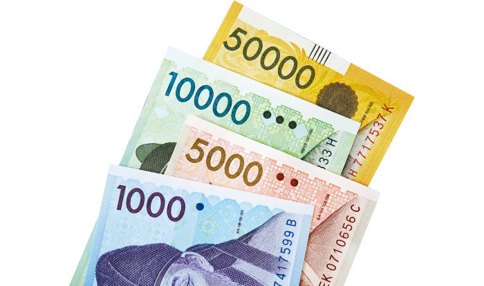
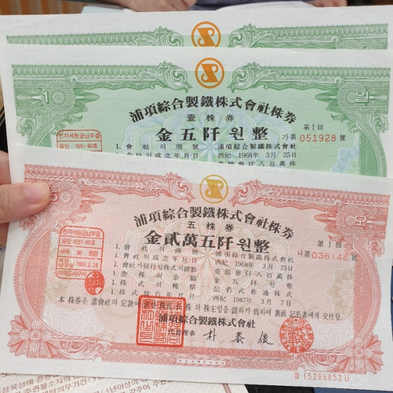
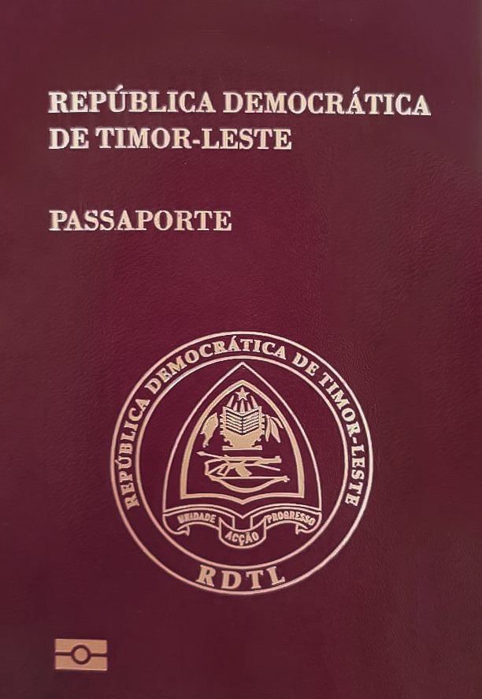
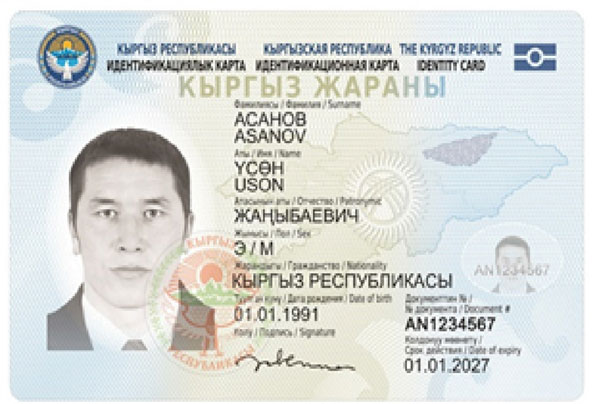
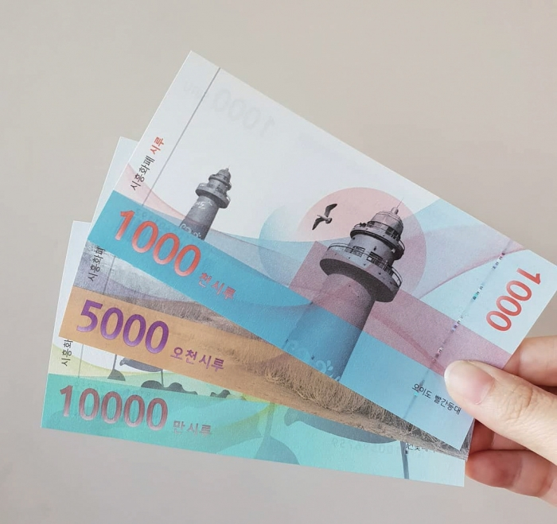
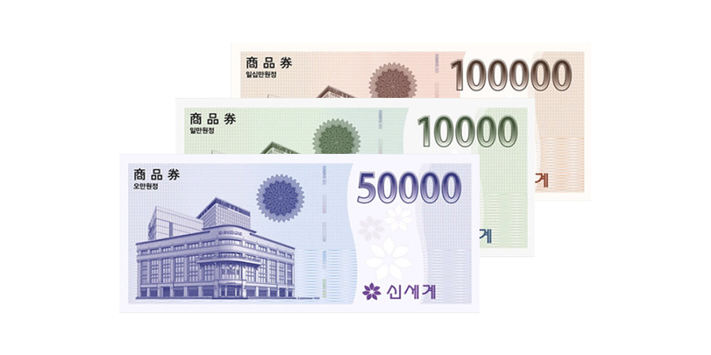
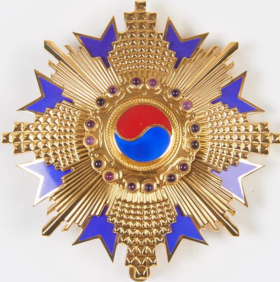
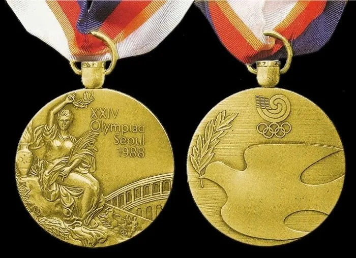

너무 당연하지만 현금,동전 생산은 한국조폐공사만함.
이게 은근 빡센게 불량제품(?)나오면 안되고, 위조방지기술 계속 개발하고 공정에 적용해야되서 난이도가 높음

각종 증권도 위조방지기술이 들어가야되서 조폐공사에서 생산함

각종 신분증,자격증,여권도 여기서 생산함. 사진이 동티모르 여권인 이유는 한국여권말고 동티모르 여권도 한국조폐공사에서 생산함
추가로...

키르기스스탄 신분증(디지털신분증)도 한국조폐공사 생산임

지자체 지역화폐 및 온누리 상품권도 당연히 조폐공사에서 생산하고있음

그리고 사기업 상품권도 생산하기도함. 신세계상품권은 제작업체가 따로있지만, 위조방지를 위해서 조폐공사와 협업중임

각종 정부 훈장도 위조방지를 위해서 조폐공사에서도 생산함 그리고 국제 행사용 메달

88올림픽,평창 동계 올림픽 메달또한 한국조폐공사에서 생산했음(너무 당연한가?)
추가로 모바일 기반 지역화폐 운영 및 유지보수,위변조 방지 솔루션(물리적인 위변조방지 잉크나 디지털워터마크)도 생산함.
현금없는 사회로 간다고 조폐공사가 없어지는경우는 없다고 보면됨. 돈말고 찍어 내는게 생각보다 다양함
한줄요약 : 급여랑 상여금을 회사상품제공으로 퉁치는 악덕기업이기도함 ㅋㅋㅋㅋㅋ
우리꺼 말고 다른나라 거도 막 만들어주는거 보고 신기하긴 했음 기술이 좋나봐